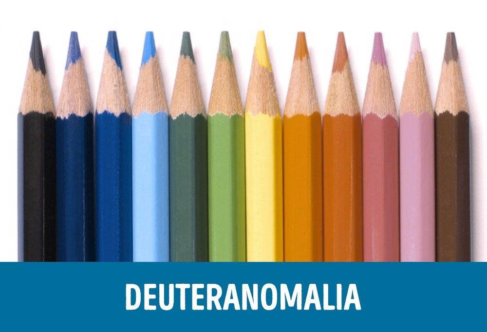
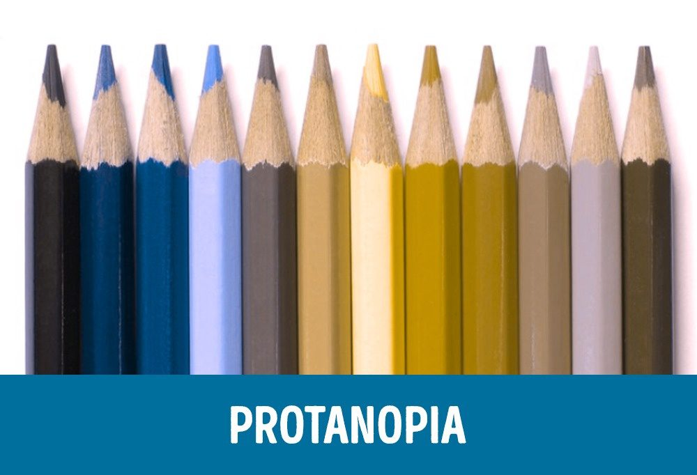
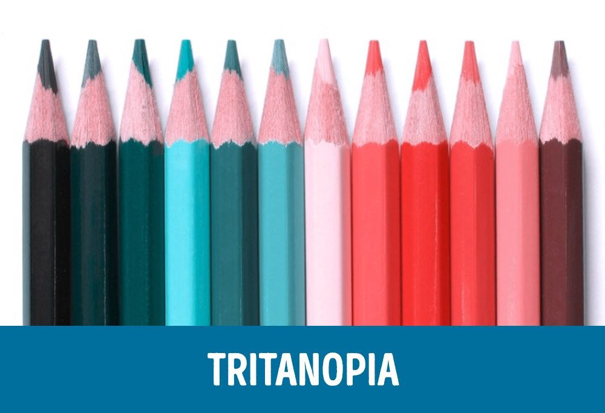

การมองเห็นของคนตาบอดสี

ตาบอดสีเขียว หรือ Deuteranomalia
เป็นคนตาบอดสีที่พบได้มากที่สุด พบในผู้ชายประมาณ 4.63% และยังมีอีกคนหลายที่ไม่รู้ว่าตัวเป็นโรคนี้ จะเห็นได้ว่าคนที่ตาบอดสีเขียวจะมองเห็นภาพถ่ายสีสว่างน้อยลง โดยเฉพาะอย่างยิ่งสีเขียวและแดง
เพิ่มเติม

ตาบอดสีแดง หรือ Protanopia
เป็นตาบอดสีที่พบได้น้อยมาก พบในผู้ชายเพียงแค่ 1% เท่านั้น จะมองเห็นสีเขียวและแดงเพี้ยนไป ส่วนการมองเห็นสีฟ้าและสีเหลืองสามารถมองเห็นสีได้ตามปกติ
เพิ่มเติม

ตาบอดสีน้ำเงิน หรือ Tritanopia
เป็นตาบอดสีที่พบได้ยากมาก พวกเขาจะมองเห็นโลกเป็นสีชมพูและเขียวเท่านั้น
เพิ่มเติม
ตาบอดสีทุกสี หรือ Total color blindness
สามารถพบได้น้อยมากๆ มีโอกาสเพียงแค่ 0.00003% ของประชากรโลก
เพิ่มเติม